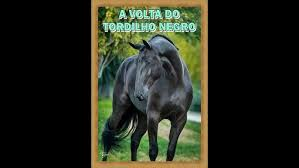

Aquele tordilho negro
Que há muito tempo domei
Na estância do paredão
Um certo dia voltei
Fui atender o chamado
Da moça que a flor ganhei
Pra chegada ter mais brilho
Eu fui no mesmo tordilho
E às três da tarde cheguei
A fazenda embandeirada
De muito longe avistei
Um peão pra abrir a cancela
Meti o tordilho e cruzei
A linda moça na porta
Falou pro pai, escutei
Vem chegando o domador
Aquele que eu dei a flor
E agora me apaixonei
Desci do tordilho negro
E a mão da moça apertei
Num aperto carinhoso
Que ela me amava notei
Sem sentir nada por ela
Pedi licença e entrei
Tava ansiosa que eu chegasse
E mandou que eu sentasse
Numa cadeira de rei
Logo veio o chimarrão
E a erva boa provei
Deu-me outro sinal de amor
Aí me justifiquei
Não resisti, dei um beijo
E pra cadeira voltei
Dei-lhe a cuia com carinho
Apertei o seu dedinho
Que a amava lhe confessei
Pedi um prazo de um ano
Com a linda moça casei
Na garupa do tordilho
Pra minha casa levei
Na estância do paredão
Dois presentes eu ganhei
Duas coisas que um homem quer
Cavalo bom e mulher
Meu sonho realizei
